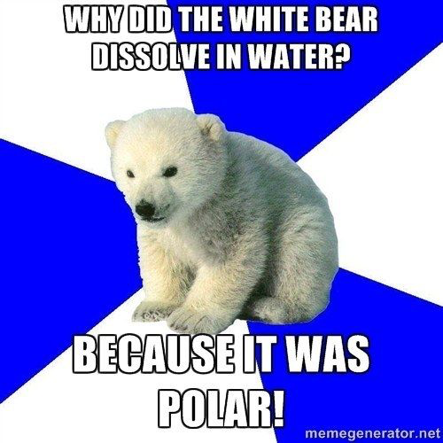
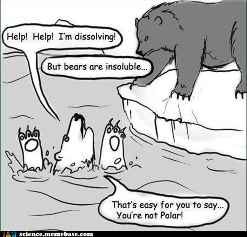
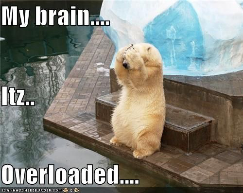

Jeremiah 33:2-3
Thus says the Lord who made the earth, the Lord who formed it to establish it—the Lord is his name:
Call to me and I will answer you, and will tell you great and hidden things that you have not known.
Assignments this week (click me!)
Student Notebook hyperlinks for module 4:
You may skip this activity if you wish, because it requires you to download software.
p. 52 in the SNB: Formation of Water Shells around Ions interactive model
Required Videos:
The Chemistry of Water by Chemistry Now
Water: A Polar Molecule by Bozeman Science
Same info, but in a cute style:
Properties of Water by the Amoeba Sisters
The Atmosphere by Bozeman Science
Optional but Helpful:
Vocabulary Flashcards on Quizlet
Module 4 flash cards


